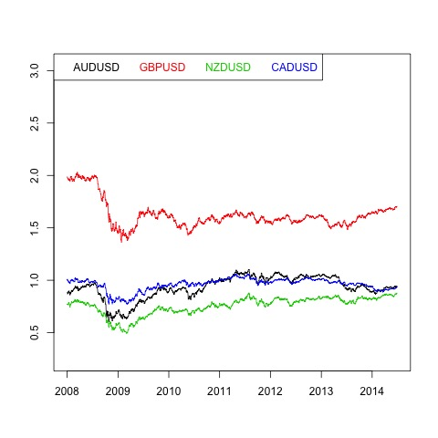
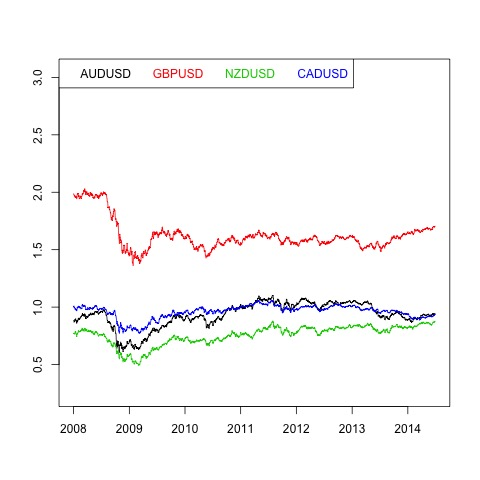
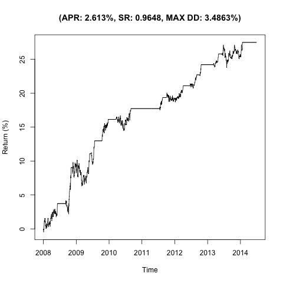
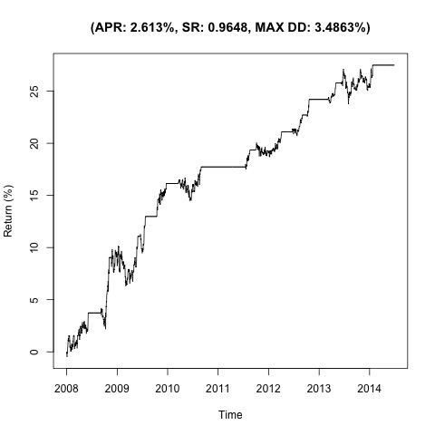

Johansen-Procedure 1.98 7.52 9.24 12.97 6.7 17.85 19.96 24.6 20.57 32 34.91 41.07 50.33 49.65 53.12 60.16 1 1 1 1 1 0.06 5.07 0.18 -0.09 0.32 -0.51 -2.58 0.08 -1.97 -3.95 -1.42 -2.33 -1 1.45 3.14 0.72 -4.81 -0.34 -0.62 -1.75
Augmented Dickey-Fuller Test p-value 0.0150507762502838

 

 
